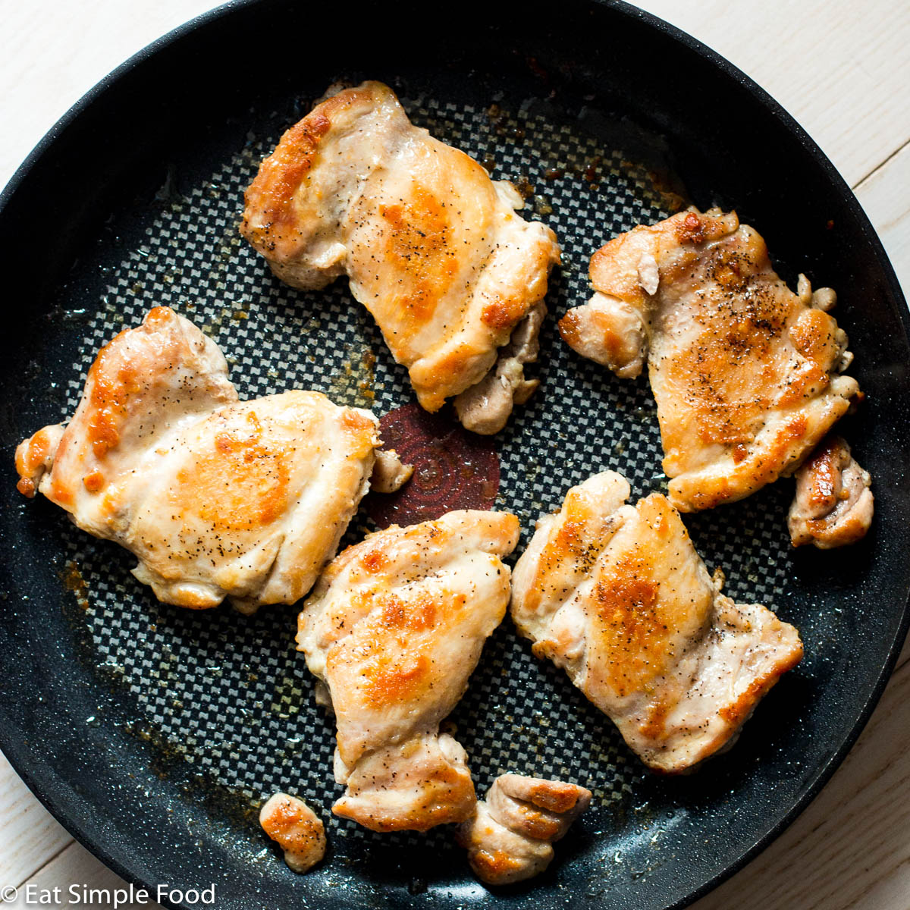

Crack Chicken
Crack Chicken Recipe

I ripped this recipe off of a guy on Youtube. It's a great recipe because it takes less than
15 minutes total, including prep time.
Let's start. Shall we?
Ingredients
- Chicken (literally any amount)
- Mayonnaise
- Any seasoning (try old bay!)
- Kosher salt
Steps
-
Lightly season the chicken with kosher salt and other seasonings.
-
Cover the chicken in mayonnaise. Thin coat is fine, usually no more than a tablespoon per half pound.
-
Put the chicken into a prewarmed skillet on medium high. Flip the chicken a couple of times to ensure an even
golden brown crust. Take the chicken off heat around 155° farenheight and let it sit for 5-10 minutes before cutting.